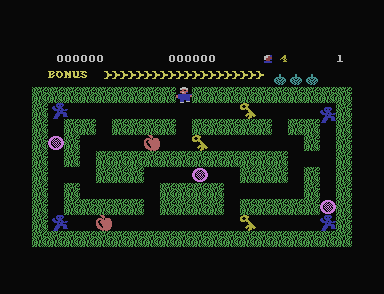

01 · The game
Collect the objects and return to the exit
Cuthbert works through a maze full of keys, rings, and apples. Guards patrol the corridors. Collect every object, then leave through the gap at the top.
Bombs can remove guards, but their explosions also kill Cuthbert. A shrinking bonus bar gives the maze a deadline. The next maze adds a bomb and eventually adds more guards.
This C16 program opens straight into the first maze. The displayed 4 counts spare lives: there are five attempts before game over.

03 · TED sound
Sound: walking pulses and bomb noise
Walking produces short electronic beeps with the buzzy tone of a square wave. A planted bomb makes noise through TED, the machine's sound and display chip. Detonation changes that noise into a brief effect.
These excerpts replay settings sent to TED by the original sound code at $1F9A. The site's TED sound model turns those settings into audio. Tests regenerate the settings from the source listing. The held-fire excerpt matches the input checks recorded in plus4emu, the emulator used for the reference screenshots.
04 · A rebuilt frame
The screen is a grid of changing characters
The picture uses forty columns and twenty-five rows of characters. Cuthbert and the guards move by replacing the pictures inside selected character slots.
The screen codes start at $0C00, their colours at $0800, and the font at $3800. The drawing code at $1621 replaces the pictures in six character slots near the end of the font. The Graphics tab shows every stored animation frame.
05 · Movement and controls
Movement crosses a character in two steps
Each walking step advances four pixels along its direction. Starting a vertical move from a horizontal half-step also aligns Cuthbert four pixels to the left. The game tests a new horizontal cell on the second step to the right and the first step to the left. This follows which edge of the character the player crosses.
This horizontal walking model is checked against the original code at $145A, including both half-steps with blocked neighbouring cells. The game tests right, left, up, and then down. During a vertical half-step, pressing left or right finishes the vertical alignment first.
Joystick port 1 supplies the same stored pressed-or-released values for movement and fire. The pause keys are handled by the scan at $1339.
06 · Bomb inventory
Nine bombs fit behind five icons
Cuthbert starts with three bombs and earns another for completing a screen. The stored inventory stops at nine. The panel draws five icons at most.
A planted bomb occupies one two-by-two character block. After a six-update delay, the stored fire-button value can detonate it. Holding fire down is enough. A bomb planted at the exit can catch every new attempt in the same explosion.
07 · Guard decisions
Guard directions come from the timer
The game reads a rapidly changing timer value between 0 and 255. A guard usually keeps its direction. When the timer triggers a fresh choice, another reading can select a direction or leave the guard idle for this update.
The code at $1E64 keeps the stored state when its first reading is below 220. A fresh reading below 45 produces an idle update; other fresh readings select one of four directions. The next check at $1EE7 treats walls and pickups as obstacles. It accepts spaces and the high character codes used by moving actors.
08 · The bonus clock
The bonus clock counts game updates
The bonus bar starts with twenty segments. A segment lasts one hundred passes through the main game loop, the code that repeatedly moves actors and checks inputs. Completing the maze calls the ten-point adder four times per remaining segment.
The loop uses busy waits: it spends time repeating instructions before starting another update. That wait is separate from the screen refresh. The work in each update also varies, so one hundred updates is not a constant number of seconds.